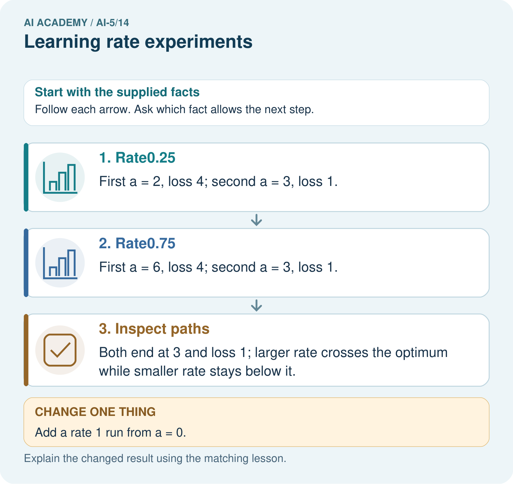

AI Academy · Level 5 · Grade 10 · Week 14 · Teacher guide
Learning rate experiments
Learn to understand, design, build, test and explain AI systems responsibly.
Project: Image-pattern Network Investigation
Teacher guide · 1 of 7
Prepare the purpose, prerequisites and materials
Teach the learning cycle
Primary target: Run a controlled comparison of learning rates
| Session | Sequence and minutes | Resources |
|---|---|---|
| Session 1 · Understand · 45 min | 0–7: recall and prerequisite; 7–15: inspect the concrete case and predict; 15–30: teacher models the worked trace; 30–40: learners explain a step using the text and visual; 40–45: check the core idea. | Sections 1–6; record the brief recall in the workbook. |
| Session 2 · Practise · 45 min | 0–5: retrieve the procedure; 5–15: W2 completion practice; 15–23: explain and check with a partner; 23–30: each learner answers the misconception check; 30–40: targeted reteaching or a harder variation; 40–45: prepare the investigation. | Sections 7–10; use the matching workbook W2 and misconception check. |
| Session 3 · Investigate and transfer · 45 min | 0–5: retrieve the decision rule; 5–20: investigate or trace; 20–30: start the independent case; 30–38: connect the project; 38–43: act on feedback; 43–45: plan the return check. | Sections 9 and 11–14. Give extra time to finish the full task set; use Section 15 when the week includes a coding lab. |
This is a starting allocation of 135 minutes, not a validated duration. Preserve all named topics. Schedule extra time for connected examples, the full investigation, independent cases and project building. Repeated copies of a case share one recorded attempt; they are not new evidence.
Retrieval answer guidance
Batching and epochs
Without opening the old lesson, explain one key idea from Batching and epochs. Give an example and a mistake that the idea helps you avoid.
Look for: Distinguish an example a batch an update and an epoch
Reference example, not the only acceptable wording: Teacher explanation: Batch lengths 4, 4, 2; three updates per epoch, nine total updates and 30 example visits.
Updating parameters
Without opening the old lesson, explain one key idea from Updating parameters. Give an example and a mistake that the idea helps you avoid.
Look for: Apply a learning rate to an ordered gradient
Reference example, not the only acceptable wording: Teacher explanation: New a = 2 - 0.2 times -3 = 2.6.
Loss functions
Without opening the old lesson, explain one key idea from Loss functions. Give an example and a mistake that the idea helps you avoid.
Look for: Calculate per-example squared error and mean squared error
Reference example, not the only acceptable wording: Teacher explanation: Residuals are -1 and 2, squares 1 and 4, MSE 2.5.
Use two 45-minute sessions and connect signed distance to squared loss before introducing the factor formula. This is a fully explained quadratic experiment with a frozen hidden representation. Avoid general prescriptions about rate values. Students should distinguish an oscillating parameter from increasing loss.
Outcomes
Run a controlled comparison of learning rates
Explain slow progress oscillation and increasing loss in a toy model
Report the limits of a training experiment
Preparation
Printed lesson and workbook; paper and pencil
Calculator and optional local Python 3 editor; no packages or AI accounts needed
Use the fictional examples supplied; prepare the fresh retry before class
Prerequisite answer
An epoch visits the data once, but each batch causes an update. More batches mean more updates under the stated rule.
End goal for the pictorial case
By the end, I can explain learning rate experiments using a traced example and a stated limitation.
This added worked case illustrates the week’s main idea. Retain all original and connected topics; schedule its practice within the teaching cycle.
Teacher guide · 2 of 7
Explain and model the mechanism
Use the same restricted network h = ReLU(x), y = vh, with only v trained. Keep the fictional training pairs (1, 2) and (2, 4), start v = 0, and use one full-data batch per update. Compare rates 0.05, 0.2, 0.3, 0.4 and 0.5 for exactly four updates each. Restart at zero for every run.
The training objective is ordinary MSE: L(v) = 2.5 times (v - 2) squared. Its gradient is 5 times (v - 2). A step is new v = v - rate times 5 times (v - 2). This small quadratic lets us explain each result rather than treating the rate as a magic setting.
The same rate need not behave this way for another model, input scale, loss convention or batch rule. Rate 0.2 is an exact one-step solution here because of this particular gradient formula.
Write d = v - 2, the signed distance from this objective minimum. Substituting the update gives new d = (1 - 5 times rate) times old d. At rate 0.05 the factor is 0.75: distance shrinks without changing sign. At rate 0.3 it is -0.5: distance changes sign and halves. Both can reduce loss.
The helper assumes a finite rate and nonnegative integer update count. Its five logged states include the initial value. At 0.3 the parameter sequence is [0, 3, 1.5, 2.25, 1.875] and loss is [10, 2.5, 0.625, 0.15625, 0.0390625]. Crossing the minimum does not itself mean training failed.
| Term | Meaning |
|---|---|
| Learning rate | The multiplier controlling the size of a gradient update |
| Controlled comparison | An experiment changing a named factor while holding other stated conditions fixed |
| Oscillation | Repeated movement from one side of a value to the other |
| Divergence | Movement away from a target solution with growing error in this experiment |
The update factor explains three behaviours
Guided: multiplier -1; v becomes 4 then 0, with MSE 10 at both states. Parameter change does not guarantee decreasing loss. Exit: for the fixed two-example objective, start and four-update budget, rate 0.2 reached zero training MSE after one update. This does not demonstrate an optimal rate or generalisation for other networks or data.
Model the reasoning aloud
Use the complete worked example below before asking learners to complete W2. Reveal a small part, invite a prediction, then explain the deciding step. These teacher notes contain solutions; do not reveal the independent case answer during modelling.
The update factor explains three behaviours
| Thinking move | Teacher prompt |
|---|---|
| Plan | What is given? What is the question? Which procedure fits these facts? |
| Do | Point to each input and intermediate step in the worked trace. Name the rule that allows the next step. |
| Check | Does the output answer the question? Which assumption or limitation prevents a larger claim? |
Use the diagram and verbal explanation together. Ask learners to match a sentence to a specific visual step; do not assign learners fixed visual or auditory learning styles.
A pictorial worked case: Learning rate experiments
Compare learning rates with identical starting loss and update counts.
The facts we will use
Loss J(a)=(a-4)²; gradient 2(a-4); start a = = 0. Compare two updates at rates0.25 and 0.75.
All inputs and outcomes in this worked example are invented classroom data; no real model run is claimed.

Read the picture one step at a time
Why this result follows
Keep the starting parameter and update budget identical to compare rates fairly. Rate one-quarter approaches the optimum from below; rate three-quarters crosses it and comes back. Their final losses happen to match after two updates, despite different paths. Rate one repeatedly overshoots by the same distance, so using the correct gradient alone does not ensure improvement.
What this example does not establish
These quadratic paths explain step size. Real nonconvex networks can have more complicated rate behaviour.
Change one thing in the pictured case
Change: Add a rate 1 run from a = 0.
Prediction: Its path is 8 then 0, with loss 16 at both steps.
Reason: The update alternates across4 without reducing the initial loss.
Ask while showing the picture
Cover the result. Ask learners to name the inputs and predict the next step. Uncover one step, connect the icon to the actual procedure, and explain its evidence. Then change the supplied condition and compare. The picture is a representation; it does not document execution of a real AI model.
Teacher guide · 3 of 7
Demonstrate and guide practice
| Time or stage | Teacher action |
|---|---|
| Session 1 start to 7 minutes | Retrieve epoch and update counts; agree on one full-data batch and four updates per run. |
| 7 to 18 minutes | Calculate the first row of each rate run and keep all resets visible. |
| 18 to 32 minutes | Derive new d from the update rule using substitution; complete W1. |
| 32 to 45 minutes | Run or trace Python and compare rate 0.3 with W2, marking sign and magnitude separately. |
| Session 2 start to 8 minutes | Complete the guided rate 0.4 example and explain why changing values can leave loss unchanged. |
| 8 to 20 minutes | Use W3 to connect the loss scale with the gradient and an equivalent rate. |
| 20 to 35 minutes | Collect the three independent W4 traces with a fresh reset before each. |
| 35 to 45 minutes | Use W5 and the exit response, then administer the fresh retry and record the experimental limits. |
Use the worked example in Sections 3 and 6. Collect a prediction before revealing its result; ask the learner to point to each intermediate fact.
Provide a number line with the minimum marked and a table for old value, gradient, new value and loss. Extension: derive 0 < rate < 1 for strict loss decrease on J(a) = (a - 1) squared away from the minimum, and compare with the lesson bound 0.4.
Reduce help deliberately
Completion task: At rate 0.3 the first update gives v = 3, past the minimum at 2. Calculate the next v and loss. Has the first crossing proved divergence?
Teacher check: Teacher explanation: Next gradient 5 gives v = 1.5 and loss 0.625. No. Signed distance changes side but shrinks by half each update; loss decreases.
Start by identifying the given inputs together. Leave the intermediate steps blank. If needed, model one step, then withdraw that help on the next step. Move to a full trace only when the partial trace is understood. For partners, alternate explainer and checker; collect a response from every learner before discussion.
Individual reasoning check
Use the worked case for Learning rate experiments. Proposed explanation: “Crossing the minimum means divergence”. Decide whether this explanation is supported. Point to the step or supplied fact that decides; explain your repair if needed.
Expected correction: Compare distance magnitudes or losses; alternating sides can converge.
Collect explanations, not only yes/no votes. If a misunderstanding is common, re-model the relevant step for the class. If it affects a few learners, give a short targeted group explanation while others solve a more demanding variation.
Pictorial practice question
What should a fair rate comparison hold fixed? Point to the relevant step in the picture, then write the changed result and the rule or evidence that supports it.
Reasoned teacher answer
Use the same objective, start a = = 0 and two-update budget; report full paths, not only the preferred run’s endpoint. Changed-case check: Its path is 8 then 0, with loss 16 at both steps. The update alternates across4 without reducing the initial loss.
Changed-case reasoning: Its path is 8 then 0, with loss 16 at both steps. The update alternates across4 without reducing the initial loss.
Collect each learner’s explanation before discussion. Use the first missing connection between input, deciding step and result to choose support. This question is worked-case practice, not fresh mastery evidence.
Teacher guide · 4 of 7
Run the investigation and diagnose misconceptions
Crossing the minimum means divergence: Compare distance magnitudes or losses; alternating sides can converge.
A larger rate is always faster: The tested 0.5 rate increases this objective; 0.4 keeps it unchanged.
The best rate is independent of loss scaling: Scaling the loss scales its gradient and changes the step at a fixed rate.
Use Section 9 for the evidence ledger. Add a boundary or missing-input case and record the expected response before checking. More successful repeats of one case do not establish wider coverage.
Match the support to the first error
| What the response shows | Next teaching action |
|---|---|
| Missing or misread facts | Read the case aloud, mark supplied versus unknown facts, and let the learner restate it. |
| Wrong procedure | Return to the deciding step in the worked case. Contrast it with the proposed incorrect explanation. |
| Arithmetic or implementation error | Trace intermediate values or lines; preserve the first mismatch and retry that step. |
| Correct result without a reason | Ask for a trace and a changed case before marking independent understanding. |
| An unsupported wider claim | Ask which supplied evidence supports the claim and which further observation would be needed. |
Offer an oral explanation, drawing, enlarged visual or fewer examples when that removes a reading/writing barrier. Keep the same reasoning goal. Stretch secure learners by changing a boundary or assumption and asking them to defend the effect, not simply by assigning more of the same questions.
Teacher guide · 5 of 7
Assess and explain the answers
Guided and exit questions
Guided: multiplier -1; v becomes 4 then 0, with MSE 10 at both states. Parameter change does not guarantee decreasing loss. Exit: for the fixed two-example objective, start and four-update budget, rate 0.2 reached zero training MSE after one update. This does not demonstrate an optimal rate or generalisation for other networks or data.
W1 Trace slow progress
For rate 0.05, start v = 0 and compute two updates and their training MSE values using the lesson objective.
Teacher explanation: First v = 0.5 with MSE 5.625. Second gradient -7.5 gives v = 0.875 and MSE 3.1640625. Distance is multiplied by 0.75 each step.
W2 Explain a crossing
At rate 0.3 the first update gives v = 3, past the minimum at 2. Calculate the next v and loss. Has the first crossing proved divergence?
Teacher explanation: Next gradient 5 gives v = 1.5 and loss 0.625. No. Signed distance changes side but shrinks by half each update; loss decreases.
W3 Preserve an update after rescaling loss
Replace MSE by the sum of squared errors on the two training pairs. Which rate reproduces the MSE run at rate 0.3? Explain using gradients.
Teacher explanation: The sum gradient is twice the mean gradient, so rate 0.15 reproduces the original steps. Rate 0.3 would double each step from the same state.
W4 Compare a new objective independently
Use J(a) = (a - 1) squared with gradient 2(a - 1), start a = 0 and two updates. Restart for each rate 0.25, 0.5 and 1. Compute the two new a values and losses for each run. Identify the result supported after two updates.
Teacher explanation: At 0.25: a = 0.5 then 0.75; losses 0.25 then 0.0625. At 0.5: a = 1 then 1; losses 0 then 0. At 1: a = 2 then 0; losses 1 then 1. Rate 0.5 attains the lowest objective in this comparison. The useful rate differs from the lesson model.
W5 Find an unfair comparison
Run A starts v = 0 with full-data batches for four updates. Run B starts at the final A value, changes both rate and batch size, then compares final training losses. Can the difference be attributed only to rate? Propose a repair.
Teacher explanation: No. Initial state and batch rule also changed. Restart every run at the same v, hold data, loss, batch rule and update budget fixed, and vary only rate. Report the traces and separate any later experiment with a different factor.
Independent assessment and fresh retry
W4 must include all six new states and losses with no carry-over between runs. Fresh retry: J(c) = 2(c - 3) squared, gradient 4(c - 3), start c = 1. At rate 0.125, c becomes 2 then 2.5 with losses 2 then 0.5. At rate 0.25, c becomes 3 then 3 with losses 0 then 0. Ask for a conclusion limited to these runs.
Assess independent transfer
Selected case: Use J(a) = (a - 1) squared with gradient 2(a - 1), start a = 0 and two updates. Restart for each rate 0.25, 0.5 and 1. Compute the two new a values and losses for each run. Identify the result supported after two updates.
Selected case answer
Teacher explanation: At 0.25: a = 0.5 then 0.75; losses 0.25 then 0.0625. At 0.5: a = 1 then 1; losses 0 then 0. At 1: a = 2 then 0; losses 1 then 1. Rate 0.5 attains the lowest objective in this comparison. The useful rate differs from the lesson model.
| Dimension | Evidence required |
|---|---|
| Explanation | Names the applicable idea or procedure and ties it to the supplied facts. |
| Trace and result | Preserves the given inputs and shows the relevant intermediate steps; distinguishes a prediction from an observed execution. |
| Limits | States the assumptions, missing evidence or conditions under which the result would change. |
Record each dimension as not yet, with support, or independent. Accept a valid alternative procedure with a defensible trace. Do not penalise an honestly recorded model failure if the learner correctly explains its evidence and limits.
Feedback that the learner uses
Name the earliest unsupported step and give one action to repair it. Have the learner make that repair now and explain why. Then assess the relevant skill on a fresh, fully specified case. Confirm it was not previously practised with feedback; solve and check the new case before assigning it. A follow-up design prompt is a starting brief, not automatically an equivalent test.
Teacher guide · 6 of 7
Connect the project, support and next lesson
Add a labelled learning rate experiments evidence sheet to Image-pattern Network Investigation. Show how you can run a controlled comparison of learning rates. Use the supplied fictional case and keep its inputs, intermediate steps, calculation or prediction, and limitation. Connect this record to last week’s record; a matching answer without a trace is insufficient.
Provide a number line with the minimum marked and a table for old value, gradient, new value and loss. Extension: derive 0 < rate < 1 for strict loss decrease on J(a) = (a - 1) squared away from the minimum, and compare with the lesson bound 0.4.
Week 15 separates training and validation curves.
Retain the project ledger and assess a changed case after support. Check the relevant prerequisite before carrying this component forward.
Plan the delayed return
Suggested return points in this level: ai-5/15, ai-5/17, ai-5/20. Use actual classroom dates, adjusting for holidays and gaps. One, three and six teaching weeks are scheduling choices, not a claimed optimal spacing.
At a delayed check, ask for the idea from memory and a changed application. Compare with the earlier independent response and record support used. For a new level, revisit the previous capstone before checking the new prerequisites.
| Record | Teacher evidence |
|---|---|
| Learner code and date | |
| Concept and case used; prior exposure | |
| Explanation / trace / limits | |
| Support and first repair | |
| Changed case and delayed outcome | |
| Next teaching action |
Use the evidence to choose reteaching or the next step. A completed page, confidence rating or attractive project does not by itself demonstrate understanding.
Project evidence from this case
For your Image-pattern Network Investigation, save the input, procedure, observed result and limitation of this check. Label this worked example as practice; use a different, previously unreviewed case when checking independent understanding.
Teacher guide · 7 of 7
Prepare, teach and assess
Teaching target: Run a controlled comparison of learning rates
Prepare the labelled worked-case picture, the matching workbook, fictional input cards and a place for individual responses. Check a local Python 3 environment before class; have a paper-trace version ready.
| Session | Plan | Resources |
|---|---|---|
| Session 1 · Understand · 45 min | 0–7: recall and prerequisite; 7–15: inspect the concrete case and predict; 15–30: teacher models the worked trace; 30–40: learners explain a step using the text and visual; 40–45: check the core idea. | Sections 1–6; record the brief recall in the workbook. |
| Session 2 · Practise · 45 min | 0–5: retrieve the procedure; 5–15: W2 completion practice; 15–23: explain and check with a partner; 23–30: each learner answers the misconception check; 30–40: targeted reteaching or a harder variation; 40–45: prepare the investigation. | Sections 7–10; use the matching workbook W2 and misconception check. |
| Session 3 · Investigate and transfer · 45 min | 0–5: retrieve the decision rule; 5–20: investigate or trace; 20–30: start the independent case; 30–38: connect the project; 38–43: act on feedback; 43–45: plan the return check. | Sections 9 and 11–14. Give extra time to finish the full task set; use Section 15 when the week includes a coding lab. |
Before class, solve the supported practice: At rate 0.3 the first update gives v = 3, past the minimum at 2. Calculate the next v and loss. Has the first crossing proved divergence?
Reasoned practice answer: Teacher explanation: Next gradient 5 gives v = 1.5 and loss 0.625. No. Signed distance changes side but shrinks by half each update; loss decreases.
Check every learner before discussion: Use the worked case for Learning rate experiments. Proposed explanation: “Crossing the minimum means divergence”. Decide whether this explanation is supported. Point to the step or supplied fact that decides; explain your repair if needed.
Misconception repair: Compare distance magnitudes or losses; alternating sides can converge.
Support: read the exact case aloud, enlarge the labelled picture, supply input cards and model only the first deciding step. Accept a spoken explanation or drawing; retain the reasoning goal.
Extension: Add a rate 1 run from a = 0. Require a prediction and a reason before comparing. Expected result: Its path is 8 then 0, with loss 16 at both steps. Reason: The update alternates across4 without reducing the initial loss.
Independent assessment: withhold the reserved answer until the learner has attempted the new case. Record support separately from correctness.
| Criterion | Not yet | With support | Independent |
|---|---|---|---|
| Explanation | Names an answer without a deciding fact | Uses a hint to link fact and decision | Explains the deciding fact in own words |
| Trace or test | Cannot connect input and result | Completes steps with prompts | Traces or tests a changed case accurately |
| Limits and revision | Claims more than evidence supports | Names a limit after a prompt | States a defensible limit and useful next test |
Project checkpoint: Test changed cases. Keep normal, boundary and failure cases; compare expected and observed results.
Use the weekly teacher answer for topic-specific reasoning. A saved progress tick is an activity record; judge mastery from the learner’s explanation and evidence.